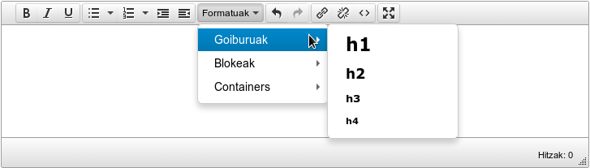
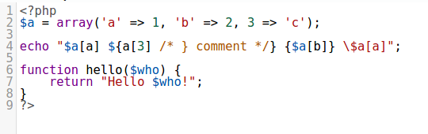

Campo del tipo textarea, normalmente utilizado para campos que tienen que albergar mucho contenido de texto o diréctamente HTML.
La configuración mas básica de este tipo de campo se hace de la siguiente forma.
fieldName:
title: _("Título del campo")
type: textarea
Ésta configuración mostraría un campo como el de text pero mayor en tamaño.
Se suele usar para escribir una pequeña descripción por ejemplo.
Éste tipo de campo se utiliza para mostrar un editor avanzado en lugar de una caja de texto simple.
Dentro del TinyMCE, están preconfiguradas trés plantillas:
Muestra pocas opciones, ideal para comentarios y textos cortos puntuales.
fieldName:
text:
title: _("Nombre del campo")
type: textarea
source:
control: Tinymce
template: simple
settings:
theme: modern
collapseLanguageBoxes: true
Muestra pocas opciones, pero añade control de bloques en html5, ideal para secciones, comentarios y textos.
fieldName:
text:
title: ngettext('Text', 'Texts', 1)
type: textarea
source:
control: Tinymce
template: html5
settings:
theme: modern
collapseLanguageBoxes: true
Igual que html5 pero muestra menos elementos en el toolbar. Los elementos que se muestran son:
- Negrita
- Itálica
- Subrayado
- Lista de viñetas
- Lista numerada
- Incrementar sangría
- Disminuir sangría
- Deshacer
- Rehacer
- Insertar/editar enlace
fieldName:
text:
title: ngettext('Text', 'Texts', 1)
type: textarea
source:
control: Tinymce
template: html5min
settings:
theme: modern
collapseLanguageBoxes: true
Muestra casi todas las opciones posibles.
fieldName:
text:
title: ngettext('Text', 'Texts', 1)
type: textarea
source:
control: Tinymce
template: debug
settings:
theme: modern
collapseLanguageBoxes: true
Esta configuración muestra un editor de código.
 fieldName:
text:
title: ngettext('Text', 'Texts', 1)
type: textarea
source:
control: Codemirror
settings:
mode: php
lineNumbers: true
matchBrackets: true
theme: twilight
tabSize: 2
readOnly : true
autofocus: true
dragDrop: false
Al realizar una cambio en el contenido del textarea por código, hay que lanzar el trigger "contentUpdate" para que se actualice el valor en pantalla. Si no se hace esto, el valor queda modificao pero no se refleja el cambio.
$textarea.val($text).trigger("contentUpdate");